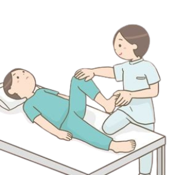
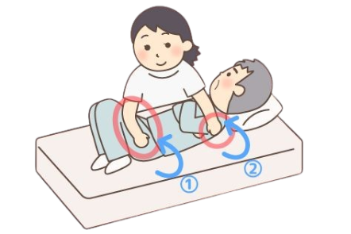
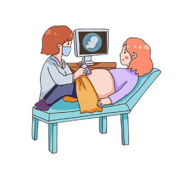

12 años de experiencia – Especialista en Fisioterapia Ortopédica
Fisioterapeuta graduada de la Universidad Nacional, enfocada en rehabilitación deportiva y recuperación postoperatoria.
Lunes a Viernes: 8:00 AM – 2:00 PM

15 años de experiencia – Médico General
Médico egresado de la Universidad de Antioquia, con amplia experiencia en atención primaria y control de enfermedades crónicas.
Lunes a Sábado: 7:00 AM – 1:00 PM
10 años de experiencia – Especialista en Quiropraxia
Especialista en tratamiento de dolores lumbares y cervicales, con enfoque en terapias manuales y corrección postural
Martes y Jueves: 9:00 AM – 5:00 PM

8 años de experiencia – Terapia Neural
Especialista en manejo del dolor crónico mediante técnicas de terapia neural y medicina alternativa integrativa.
Lunes, Miércoles y Viernes: 2:00 PM – 6:00 PM
14 años de experiencia – Pediatría
Pediatra especializada en crecimiento y desarrollo infantil, vacunación y control de niño sano.
Lunes a Viernes: 8:00 AM – 4:00 PM
11 años de experiencia – Ginecología y Obstetricia
Especialista en control prenatal, planificación familiar y salud integral de la mujer.
Martes a Viernes: 10:00 AM – 6:00 PM
